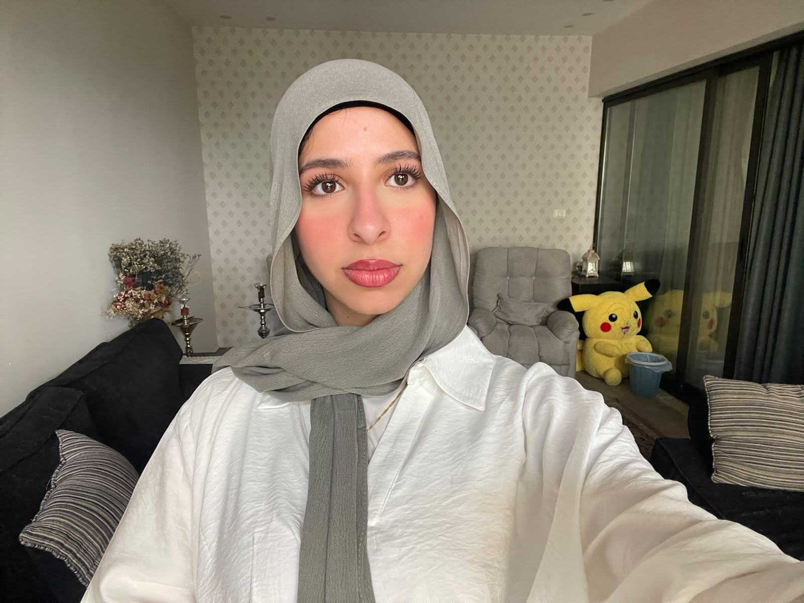

Tasneem AL-Qadri

summery
Detail-oriented Computer Engineering graduate passionate about software development
and clean code. Proficient in Python / Java / C++ with hands-on project
experience in building web applications. Seeking a Junior Software Engineer role to contribute
to dynamic software solutions.
Education
- Bachelor of Science in Computer Engineering -Hashemite University(Oct.2021 – June 2026)
Work Experience
.
Skills
- Programming Languages: C++, Python, Solidity (Graduation Project), Java (Foundations),SQL.
- Core Engineering Concepts: Object-Oriented Programming (OOP), Operating Systems (OS), Information Security, Database Fundamentals.
- Software & Tools: VS Code, Jupyter Notebook, Eclipse IDE, Microsoft Office (Word, Excel).
Awards and Certification
.
other